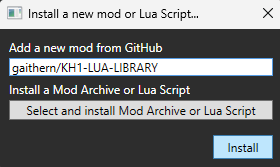
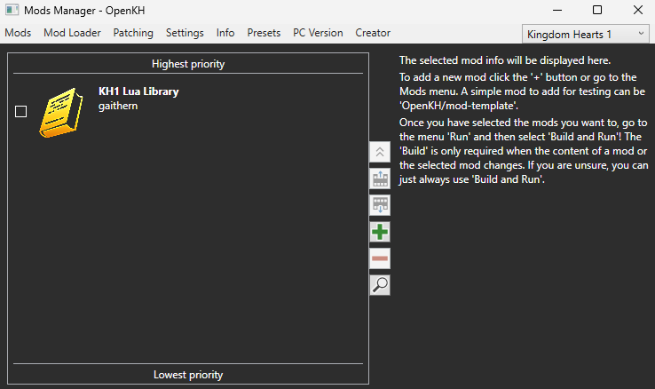
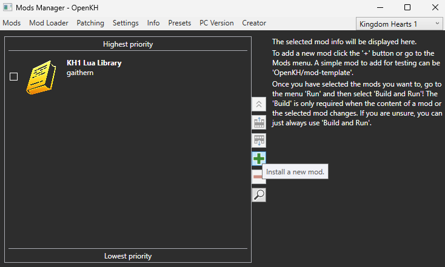
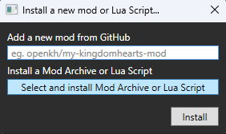
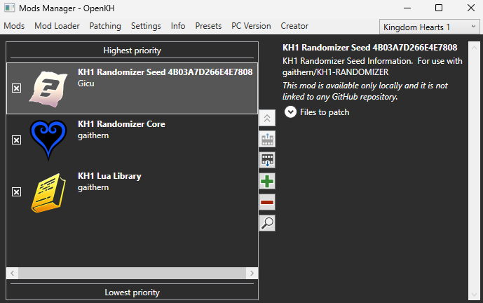
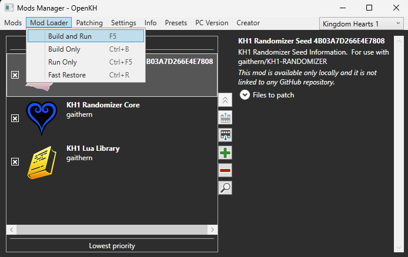

In your OpenKH folder, find "OpenKh.Tools.ModsManager.exe" and open it.

Inside the mod manager, ensure you have "Kingdom Hearts 1" select in the dropdown menu in the top right corner of the window.

Click the green plus icon to install a new mod.

First, enter "gaithern/KH1-LUA-LIBRARY" in the field labelled "Install a new mod from GitHub" and click "Install".

You should see the following mod appear:

Click the green plus icon again to install another mod.

Choose "Select and install Mod Archive or Lua Script".

Navigate to your mod zip created in the "Generating your Mod Zip" step and select it.

Find your new mod in your mod list.

Click the boxes near the mod names to enable each mod.

When ready to play, go to "Mod Loader" at the top pane and choose "Build and Run".

KH1 should open with the newly installed mods.